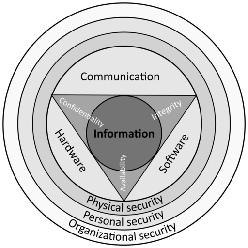

An Introduction to Hacking and Penetration Testing
If you’re interested in becoming an ethical hacker, a penetration tester, or security consultant — or you simply want to learn more about these roles, then read on. This article takes a look at hacking in a computer security context, and how to get started in this field.
If you want learn some basics, check out my free training course.
What is a Hacker?
Hackers get a a lot of bad press. They are often associated with a malicious activity — stealing data, extortion, or otherwise causing a nuisance. It’s easy to define a hacker as a law breaker — someone who uses computers to break into networks — but that’s not right. A hacker is anyone that uses their computer-related skills and knowledge to explore computer systems, find information, find flaws, and exploit those flaws to achieve some end-goal. That goal may be to extract sensitive information, or it may simply be to see what happens. Oftentimes, hackers fix the problems they find, or at least help others to do that. All this can, and is done legally (most of the time).
What is a Penetration Tester?
A penetration tester, or pen-tester is a well disciplined hacker that has permission to hack a computer network, and is paid to do so. An important part of their job is to record findings and report these back to their client in a confidential manner so that security holes can be fixed before a malicious hacker finds them.
|  |
|---|
| Image by Michel Bakni |
{kind=link}
Shades of Grey
As with any profession or vocation, the title does not define the intent. Yes, hackers can be bad, but so can anyone else for that matter. Unlike other jobs — doctors, teachers, lawyers — hackers seem to be aware of their predicament (their perceived role from the outside world) and label themselves to assist the layman in identifying their likelihood of being a bad guy:
White Hat
A white hat hacker (also known as an ethical hacker) is one that always stays on the right side of the law, and follows industry best-practice when finding security bugs and disclosing information about them. They improve the security of the organizations they work for, and the wider world as a result. Much of their work is done for free, helping to improve community projects including open-source software.
Black hat
A black hat hacker does not have the same principles as a white hat. A black hat will break the law to achieve their goals, and cover their tracks as they do so. If they find a security vulnerability in a piece of software or a web site, better to find a way to use that to make a political statement, or extort funds, rather than help fix it.
Grey Hat
The definition of a grey hat varies, but I like to think of a grey hat as anyone in the space between the white and black labels. An ethical hacker that occasionally deviates from their path of righteousness — perhaps they occasionally sell some malicious code to the highest bidder — can be considered a grey hat. They may break the law at times, but only with a view to improving computer security.
The Job
You probably have an idea in your head of what a hacker does from watching a movie like WarGames or Swordfish. When depicted on the big screen, it’s usually pretty glamorous, involves a lot of typing (and green text), and is over pretty quick. It looks pretty easy too, right?
The movies get it right in some respects and wrong in others. There’s definitely a lot of typing, and you can have your green text, but that’s about it. There’s certainly cause for celebration when you manage to break into a system, but that doesn’t happen as frequently, or as easily as we’re led to believe.
Whether you’re attempting to hack some software running on your own machine, or conducting a penetration test on your client’s network, there’s a lot of work that’s done before those big blockbuster moments. A big (huge) part of hacking, is gathering information from computer systems. Information like the names of applications, and their version numbers, operating system details, usernames and so on. Nothing interesting, not to start with. This information is used to build up a picture of target computer systems, so that hopefully a problem can be found, that leads to some form of access.
Do It Yourself
The best way to find out about what’s involved in the process of hacking and pen-testing, is to learn how to do it, and that has never been easier. In the next article, I’ll show you how to get started by setting up a virtual machine (VM) — a sandbox or container — running on your existing desktop or laptop computer. In fact, you will use two VMs: One as a tool for hacking, and one to hack into. Hacking into your own VM is a safe, legal and proven way to learn, and is a method that is used not only by newcomers, but by seasoned veterans too, who use VMs to continually improve their skills.